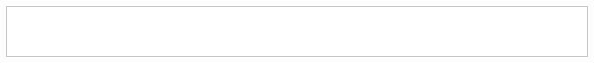

Overview
docxtools is a small set of helper functions for using R Markdown to create documents in docx format, especially documents for use in a classroom or workshop setting. These are particularly useful when one tries to does one own’s work reproducibly but has collaborators who work with Office software exclusively.
-
format_engr()to apply engineering format to numbers
-
align_pander()to print a table of numbers using pander -
put_gap()to create white space in a document -
put_axes()to place unlabeled axes in a document
Usage
library(docxtools)
data("DNase")
x <- tail(DNase, n = 5L)
output <- format_engr(x, sigdig = c(6, 3), ambig_0_adj = TRUE)
output
#> Run conc density
#> 1 11 $3.12500$ $0.980$
#> 2 11 $6.25000$ $1.42$
#> 3 11 $6.25000$ $1.38$
#> 4 11 $12.5000$ $1.72$
#> 5 11 $12.5000$ $1.72$
align_pander(output, align_idx = "crr")| Run | conc | density |
|---|---|---|
| 11 | \(3.12500\) | \(0.980\) |
| 11 | \(6.25000\) | \(1.42\) |
| 11 | \(6.25000\) | \(1.38\) |
| 11 | \(12.5000\) | \(1.72\) |
| 11 | \(12.5000\) | \(1.72\) |
Using put_gap() with knitr and R markdown, the gap height is specified in the R code-chunk header.
```{r fig.height = 0.75}
# a gap with a border
put_gap(col = "gray", fill = NULL)
```
For put_axes() with knitr and R markdown, the axis height is specified in the R code-chunk header.
```{r fig.height = 2}
# first quadrant axes
put_axes(1, col = "blue", size = 2)
```License: MIT + File LICENSE
Richard Layton